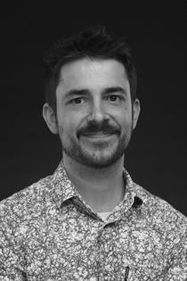
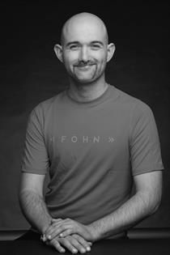
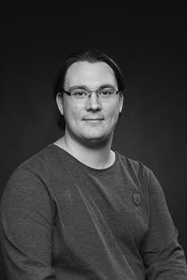

Infos über die Schülerlabore
Unser Angebot
Willkommen bei den Schülerlaboren der Hochschule Düsseldorf! Wir bieten außerschulische, interaktive Lernorte direkt auf unserem Campus in Derendorf an. Diese Website bündelt die Angebote der Schülerlabore an einer zentralen Anlaufstelle. So können sich insbesondere Lehrkräfte schnell orientieren und das passende Angebot für ihren Unterricht finden. Das Projekt wurde vom Fachbereich Medien initiiert und gemeinsam mit dem Fachbereich Design umgesetzt.
Unser Ziel ist es, Schülerinnen und Schülern einen praxisnahen Zugang zu relevanten Zukunftsthemen zu ermöglichen, von Künstlicher Intelligenz und Digitalisierung bis hin zu kreativer Medienproduktion, Architektur und nachhaltigem Design. Dazu gehören unter anderem Angebote wie „Al(l)iens“, „Die Wahl der Tiere“, „Eine Klasse lernt fliegen“, „AI to 3D“ und „Hass hinter Glas“. Statt Frontalunterricht stehen das eigene Ausprobieren und Erleben im Vordergrund.
Unser Team
Die Schülerlabore werden von Lehrenden und Studierenden der beteiligten Fachbereiche entwickelt und betreut. Die jeweiligen Ansprechpersonen finden Sie direkt auf der Seite des jeweiligen Schülerlabors. Das folgende Team gibt einen Überblick über die derzeitigen Mitarbeitenden.
Nada Ilic, wissenschaftliche Mitarbeiterin
nada.ilic@hs-duesseldorf.de
Markus Wolfschläger, wissenschaftlicher Mitarbeiter
markus.wolfschlaeger@hs-duesseldorf.de

Till Harder, Mechatroniker
till.harder@hs-duesseldorf.de
Dominik Dörr, wissenschaftlicher Mitarbeiter
dominik.doerr@hs-duesseldorf.de

Marvin Middelhoff, wissenschaftliche Hilfskraft
marvin.middelhoff@hs-duesseldorf.de

Maximilian Paterok, wissenschaftliche Hilfskraft
maximilian.paterok@hs-duesseldorf.de